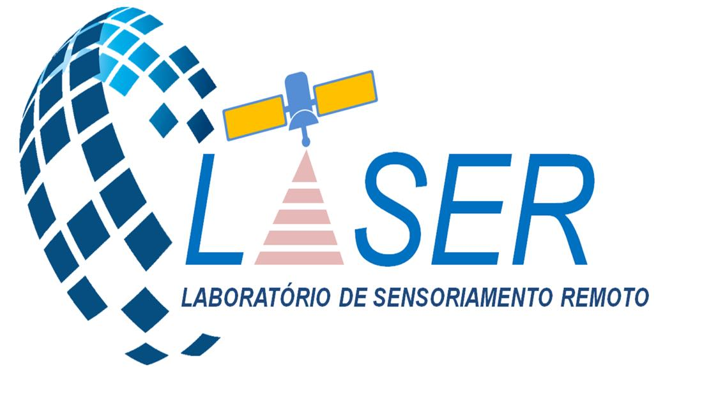

O Laboratório de Sensoriamento Remoto da UFRPE possui uma ampla gama
de equipamentos e recursos tecnológicos para a realização de pesquisas e projetos.
Os principais equipamentos incluem câmeras aerotransportadas,sistemas de processamento de imagem e softwares especializados. Estes equipamentos
permitem a coleta e análise de dados de alta precisão e qualidade, permitindo a realização de estudos detalhados sobre o meio ambiente e as áreas urbanas.

Coleta de dados-> Experimento de Eucaliptos do CECA/UFAL.
Primeiro trabalho publicado na Remote Sensing
Impacto Combinado do Tamanho da Amostra e Abordagens de
Modelagem para Prever o Volume de Caules em Eucalyptus spp.
Plantações Florestais Usando Dados de Campo e LiDAR